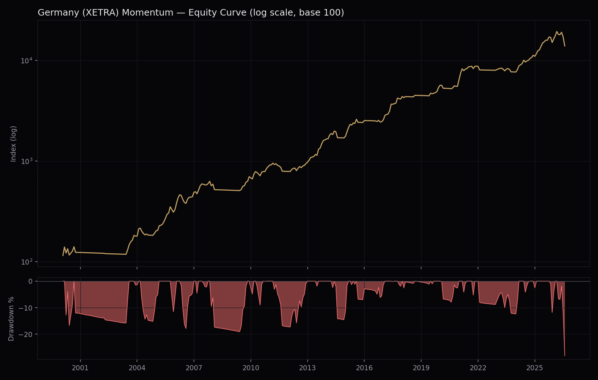

A momentum strategy on Deutsche Börse XETRA, built with the same lookahead-free engine and data-quality discipline as our Canada and Taiwan strategies. Now running as a live beta signal, and subjected to two independent hostile audits (Section IX).

An EBIT>0 / N=20 alternative was tested and rejected in favor of this config. Sharpe 0.90, Sortino 1.70, CAGR +15.0%, MaxDD only −18.0% — a genuinely better risk-adjusted / lower-drawdown trade, kept out only because CAGR was prioritized for this decision. See Section VII.
EODHD's CountryName field on XETRA tags every US company cross-listed there — Apple, Microsoft, Tesla, Alphabet, Meta, Nvidia, Amazon, Berkshire Hathaway and more — as "Germany", the same mistagging class as Canada's CDR problem. The reliable signal instead: ISIN country prefix (US... vs DE...), which correctly identifies domicile regardless of what exchange metadata claims. A full scan found 226 US-ISIN tickers on XETRA (vs 622 genuine DE-ISIN names, plus another few hundred genuine listings from Switzerland, UK, Austria, Netherlands, France and other European markets XETRA also carries). All 226 excluded per explicit request to test the strategy without US ADRs.
The raw union-of-all-tickers price panel carries 1,146 weekend "ghost" dates (average coverage 28 of 1,362 tickers on those dates, vs 465 on real weekdays) — the same calendar-contamination class found in the Canada research earlier this session. There, the bug lived in the execution-lag lookup and was already fixed by sourcing a clean index calendar. Here we found a second instance of the same root cause: the momentum signal itself, computed via the shared backtest engine's own eom = prices.resample(...).last() step, reads directly from this contaminated panel.
Verified directly, not assumed: 929 cells where the EOM signal price differs depending on whether weekend ghost rows are included, by several percent in spot checks — enough to change which name ranks in or out of the top 20. Fixed by dropping weekend rows from the panel before it ever reaches the backtest engine, rather than patching the shared engine itself. All results in this report reflect the fix; Sections IV–VI were run twice, before and after, and the fix moved the headline numbers only modestly (e.g. this section's base config: Sharpe 0.890→0.874 pre-fix comparison at the Phase 1 stage) — real, but not the dominant driver of performance.
One-at-a-time sweeps, same method as Canada/Taiwan: momentum × mcap first (no regime, no filter), then regime MA window fixed on the winner, then fundamental filter fixed on that.
| Phase | Winner | Sharpe | MaxDD |
|---|---|---|---|
| 1 — Momentum × mcap | 9M/skip0, mcap top60% | 0.87 | −47.7% |
| 2 — Regime MA (fixed on Phase 1) | MA200 | 0.84 | −29.2% |
| 3 — Fundamental filter (fixed on Phase 2) | None | 0.84 | −29.2% |
Unlike Canada (MA75) and Taiwan (MA75), Germany's regime sweep favors the longest window tested — Sharpe rises roughly monotonically from MA50 (0.66) through MA200 (0.84). The fundamental-filter sweep at this stage found EBIT>0 gave by far the best MaxDD (−19.4%) at real cost to Sharpe and CAGR — flagged here because Section VII's joint search later found a materially better version of that same trade-off.
A one-at-a-time search can miss parameter interactions. A reduced joint grid (5 lookback/skip × 3 mcap × 2 MA × 4 N × 2 filter = 240 combinations, run around the sequential winner) found a better config on every axis tested:
| Config | Sharpe | Sortino | CAGR | MaxDD |
|---|---|---|---|---|
| LB12/SK0, mcap top70%, MA200, N=20, None (final) | 0.945 | 1.81 | +20.4% | −28.2% |
| LB9/SK0, mcap top70%, MA200, N=20, EBIT>0 | 0.899 | 1.70 | +15.0% | −18.0% |
| Sequential result (Section IV, N=15) | 0.843 | 1.76 | +21.9% | −29.2% |
N interacts with the fundamental filter. The sequential search fixed N=15 before testing filters, and found EBIT>0 costly. At N=20 the same filter's MaxDD improves dramatically (−19.4%→−18.0% is similar, but Sharpe goes 0.72→0.90) — a real interaction the greedy one-at-a-time approach couldn't see. Same lesson as Taiwan's NetIncome-filter finding earlier this session.
Verified directly against the real backtest (not a proxy): the top 20 most extreme realized ticker-returns the engine actually used top out at +164% (VUL, Jan 2021) — a plausible small-cap momentum spike, nothing resembling the Taiwan/Canada sentinel-value corruption. Two events exceeded the ±90%/300% flag threshold (ONK −92% May 2008, AMC −95% Jul 2008); both fell in regime-defensive months and never reached the published return series (ret = lag_rets × regime_at_signal zeroes the whole month when regime is off). No further exclusions were needed for this final config.
LB9/SK0, mcap top70%, MA200, N=20, EBIT(TTM)>0 — Sharpe 0.899, Sortino 1.70, CAGR +15.0%, MaxDD −18.0%. Also independently verified clean: 0 flagged implausible-return events in this config's real held-position history. This is arguably the stronger risk-adjusted choice (10pp shallower MaxDD for 0.05 less Sharpe) — not used here because CAGR was prioritized for this report, not because it tested worse.
The strategy was put through two adversarial audits whose explicit brief was to falsify the results, not improve them: a first full audit (independent reimplementation, lookahead hunt, survivorship forensics, placebo battery), and a second audit run without trusting the first. Everything below was measured against the real locked backtest, reproduced first to 10−16 precision.
Pre-2015 history is a survivors-only sample. Zero price histories in the EODHD XETRA dataset end before 2015 — every delisting from 2000–2014 is simply absent, including essentially the entire Neuer Markt collapse (16 of 18 famous corpses searched — EM.TV, Comroad, Brokat, CargoLifter, Holzmann, MobilCom… — do not exist in the data). The 2000–2014 portion of the backtest should be presumed inflated by an unquantifiable amount. The honest expectation for this strategy is the clean-window figure: roughly 19% CAGR / 0.9 Sharpe, not the 26-year headline.
Delisting coverage was then verified externally: 54 documented German delistings 2015–2026 (squeeze-outs, takeovers, pure delistings, insolvencies — Wirecard, Audi, Osram down to small-caps like Aves One, Stemmer Imaging, USU) were cross-checked against the dataset's price-history end dates. 49 of 54 (91%) are present and end in the correct year; the 5 genuinely missing all cluster in 2015–2017 (Sky Deutschland, GAGFAH, Postbank, DVB Bank, McKesson Europe). Conclusion: delisting coverage is effectively complete from 2018 onward, partial 2015–2017, zero before — which is exactly why the 2015+/2017+ windows above are the trustworthy ones.
Three smaller mechanical defects were found and quantified — all with net effect ≈ 0 to +0.3pp when corrected, so none changes the conclusion:
Live bid/ask spreads were pulled from Interactive Brokers for the entire 288-name eligible universe (283 quoted): median 35bps, mean 80bps; for the 20 currently-held names, median 22bps with a heavy tail (two names at 118 and 245bps). The 40bps cost assumption is realistic at small size. Stress tests: 100bps round-trip → 18.1%/0.82; 200bps → 14.4%/0.62. Re-running the backtest with today's real spreads as an eligibility filter: names ≤100bps → 19.9%/0.93; ≤60bps → 19.4%/0.90; ≤30bps → 17.9%/0.84. Median position ADV is ~€0.4M/day: treat this as a sub-€1–2M strategy; it does not scale.
Audit verdict (confidence ~85/100): the edge is real, of roughly the advertised size in the externally-verifiable decade, executable only at small size. Expect ~19%/0.9 rather than the headline, with −25/−30% drawdowns. First quasi-live datapoint is negative: 2026 YTD −15%.